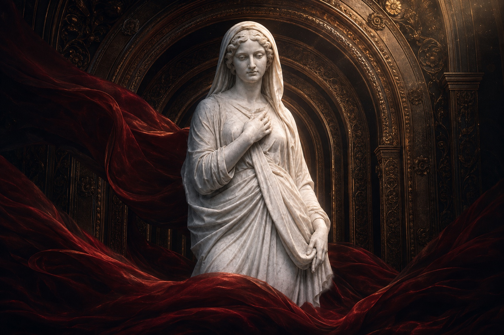

내려놓은 뒤에야,
남는 것이 보였다.
일곱 문은 저마다 이름을 요구합니다. 왕관도 변명도 그 문턱을 함께 넘지 못합니다. 마지막 암부에 남는 것은 권위가 아니라, 더는 빌려 입지 않은 존재입니다.
이 장면이 당신에게 남긴 것
탈각 · 암부 · 잔존
"From the great heaven Inana set her mind on the great below."
Inana's descent to the nether world · ETCSL, University of Oxford · 1–5
이난나의 하강을 이 기록은 빼앗긴 것의 목록으로 읽지 않습니다. 문을 통과할 때마다 권위의 표지가 사라지고, 이름을 지키던 외피가 얇아집니다. 잃는 일이 사람을 완성한다는 뜻은 아닙니다. 다만 외피와 존재가 같은 것은 아니라는 경계가 드러납니다. 이 장의 고요는 체념보다 날카롭습니다. 더는 자신이 아닌 것을 걸치지 않겠다는 판단입니다. 모든 문이 닫힌 자리에서도, 그 판단의 무게만은 남습니다.